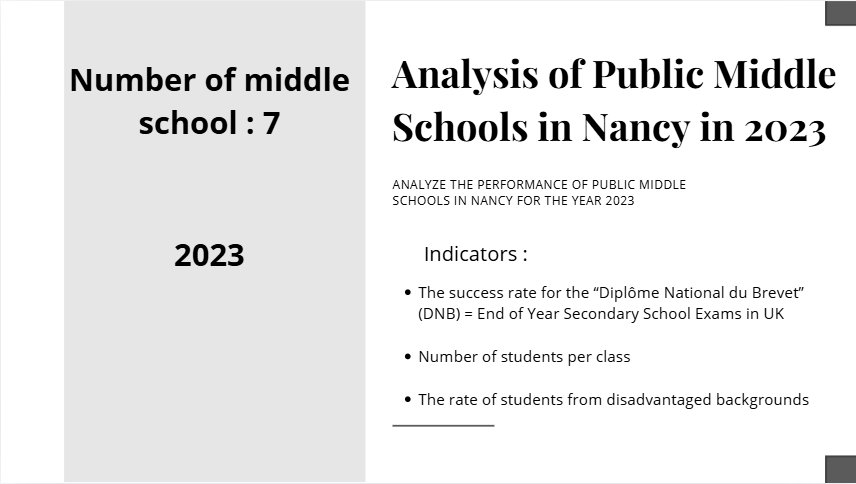

Présentation d'un Territoire en Anglais — Collèges Publics de Nancy 2023

🔍 AgrandirCadre du projet & Objectifs
Utiliser l'Open Data pour analyser les 7 collèges publics de Nancy et restituer les résultats sous forme de présentation orale entièrement en anglais. Trois indicateurs ont été retenus : le taux de réussite au DNB (Diplôme National du Brevet), le nombre d'élèves par classe, et le taux d'élèves issus de milieux défavorisés.
Étapes de réalisation
Sélection des indicateurs & collecte de données
Parmi les nombreuses données disponibles (absentéisme, ressources, résultats aux évaluations nationales…), nous avons retenu trois indicateurs : pertinents, accessibles et faciles à expliquer à un auditoire anglophone. Sources : data.grand-est.education.gouv.fr et le Ministère de l'Éducation Nationale.
Analyse des résultats par collège
Comparaison des taux de réussite au DNB (Alfred Mézières : 92%, 78% de mentions ; Louis Armand : 83%, 73% de mentions), des effectifs moyens par classe (25 élèves en moyenne, variations selon les établissements) et des indicateurs de position sociale (IPS) — Jean Lamour avec un IPS de 75, révélant une forte proportion d'élèves défavorisés.
Restitution orale en anglais
Présentation structurée avec le vocabulaire statistique anglais approprié (graduation rate, social position indicator, class size, honors). Nuancer les conclusions : les disparités observées reflètent l'environnement socio-économique des établissements, mais les indicateurs ne capturent pas tous les facteurs contextuels (implication familiale, ressources disponibles).
Ce que j'en retire
L'Open Data comme outil d'analyse territoriale
Cette SAÉ m'a montré que des données institutionnelles librement accessibles permettent de produire une analyse rigoureuse et concrète sur un territoire donné. Le vrai travail de l'analyste commence quand il faut choisir quels indicateurs retenir et comment les rendre lisibles pour un auditoire non spécialiste.
💡 Ce que j'ai retenu
Présenter des données en anglais nécessite une double compétence : maîtriser le fond statistique ET le vocabulaire de spécialité. Dire "the graduation rate" au lieu de "the success rate" n'est pas un détail — c'est ce qui crédibilise la restitution devant un auditoire international.
Ce que ça m'apporte en entreprise
Dans un contexte professionnel internationalisé, savoir restituer une analyse de données en anglais est attendu dès les premiers postes. Les grandes entreprises, les cabinets de conseil et les structures à dimension internationale exigent une communication data en anglais — cette SAÉ pose les bases de cette compétence.
Positionnement par rapport aux ACs
| Apprentissage Critique | Statut | Commentaires |
|---|---|---|
| AC13.04 Mesurer l'importance d'expliciter la démarche suivie lors de la restitution |
P | Méthode de sélection des 3 indicateurs expliquée en anglais, bien que l'argumentation du choix aurait pu être plus développée. |
| AC13.06 Mesurer l'importance d'une expression précise en français et en langue étrangère |
A | Bon niveau de précision lexicale en anglais statistique (graduation rate, IPS scale, class composition). Formulations nuancées utilisées plutôt que des généralisations abusives. |